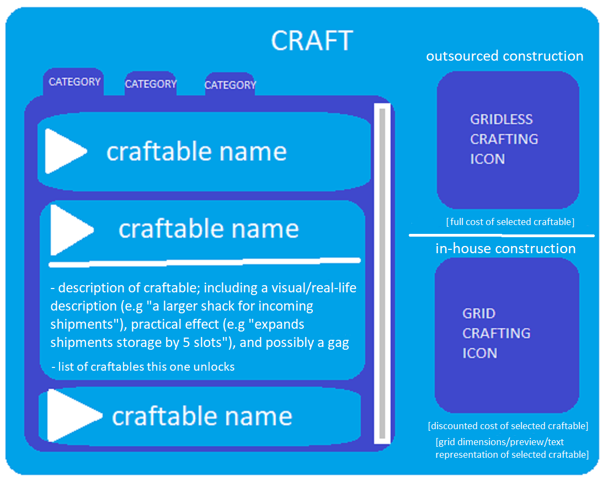
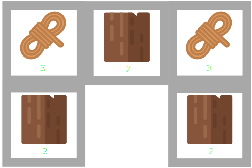

Description
Warehouse was my (Eve Aviv Keinan's) first in-depth programming project, an inventory management interface inspired by the those common to the "sandbox" game genre.I worked on (sporadically) from late April until mid September 2021. It was created as the flagship project in of my programming portfolio, but ended up getting discontinued for a different one.
Questions & Answers
Q: Why did you create the project?
A: I'd just finished learning basic HTML & CSS & JS when I started the project; I wanted to put that new knowledge to work by creating my first/main long-term project, and to use said project as a display of said knowledge in my programming profolio.The reasons I went with this particular project were:
- My extensive experience with video-game inventory interfaces, mechanics, and their pitfalls (and just game UI & UX in general).
- I quickly came up with a long list of features of a gradually increasing level of expertise, enabling me to upgrade the project alongside my full-stack development studies and to work on the project long-term (if I'd want).
Q: Why didn't you use any frameworks, libraries, etc?
A: I wanted to practice, evolve, and have evidence of my understanding of the core language for the following reasons:- I wanted to have a foundational understanding from which I could more easily grasp new/different tools in the ecosystem, as I've been informed that these are numerous and ephemeral.
- Those tools can't account for everything, and I was liable to encounter issues which could be better resolved with an understanding of the (presumed/reverse-engineered) underlying vanilla code.
- I was unsure about my commitment to the language/ecosystem, and Vanilla JavaScript seemed to be more similar to other languages.
Q: Why did you stop working on the project?
A:- I came to the conclusion that I was creating a game which is not worth playing: It wouldn't be unique in any worthwhile way, and its sole hook (spending time doing menial tasks purely to earn momuments of time spent) is one of the worst hooks in video-games.
- I came up with an idea for a different project which had more use, would allow me to express aspects/interests of myself I'm prouder of, and would be more palatable on my portfolio.
Q: What do you like/dislike about the project?
A:Like: The opportunities it gave me to...
- Work on an in-depth project in vanilla JavaScript.
- Consider, program, and refine game logic.
- Use the HTML drag-and-drop API.
- Toy with SVG art.
Dislike:
- The design & CSS: The page's style is very dated/amateur, and the CSS gets the job done but with horrible implementation in many ways.
- The overwhelming nature of the codebase: In hindsight, the following changes seem mandatory for a project of this scale (and especially the scale I had in mind for it)
- Much of the code needs to be extracted into modules/helpers.
- TypeScript.
- A component-based framework.
- The wrong and/or unintuitive use of
let&const: I usedletfor everthing except global objects, for which I usedconstsolely for the color/syntax highlighting.
Q: Source for the assets?
A: Got everything from online catalogues (such as, but not limited to, svgrepo.com), and used the incredibly helpful boxy-svg.com to edit/combine them as I wished....Except for the rock image; That one was made by a friend ("Kostusha") who offered to do so after seeing the poor quality of the previous one.
(I've only used stuff which is either explicitly not under any license or under CC0 1.0 Universal Public Domain Dedication.)
Q: What did you plan on adding to this project?
A:- Craftable utility and cosmetic upgrades.
Very rough sketch of the menu:
 Craftables ideas:- Extra slots (expanded warehouse/trashcans/shipments shack).
- Raised weight cap (reinforced flooring/shelving?).
- Offline auto-looting from shipments while storage has capacity (gatherer/servant/labourer).
- Resource-sink profile badges (e.g property).
- Custom icons/color palletes (presets for sure, maybe even an expensive user-selected option with the option to upload personal item image replacements).
- Sorting by item/slot weight/count/name (advanced/dynamic shelving/storage).
- Capacity multipler for slots (??) or per item/type (efficient packaging).
Example crafting grid (this one would create a small building/shack, likely for extra storage space):  The grid would move with the cursor, and each crafting requirement slot would need to be hovered (detected with the IntersectionObserver API?) above an storage slot containing a matching item type and a sufficient quantity thereof, in order to craft the craftable at hand. This obviously would require the storage to be sorted appropriately before activating the grid.
When hovering a grid above slots which don't match the criteria, each applicable grid slot would indicate as such (probably by being partially transparent and/or turning red). - Complete touch-screen compatibility (might already exist, testing required).
- Unique slot border-image for each section (storage/trash/shipments).
- Proper backend, with the capacity for saved profiles (and taking the appropriate measures to close vulnerabilities).
- Access to saved profiles through login options provided by other platforms (e.g Google, GitHub, Twitter).
- Periodic, randomized-to-an-extent loot generation system, with backend settings for:
- Item/Category (individual items/categories, or just randomly from all).
- Quantity (each item/category will have a default range for when no quantity is stated, and this quantity might be adjusted for each player based on their wealth).
- Frequency (give X items of Y amount once now / give X items of Y amount every Z period of time).
- Target (all users or specific user(s)).
- Duration (lootable until X time passes or it'll disappear for users who didn't loot).
- Git & GitHub upload and online hosting which is synced to the repository.
- Online users list and/or a friends list.
- Live trading system with other online users and/or Steam-style trade offers.
- Warehouse Twitter profile with API-enabled loot drops, which works by parsing the text of each new tweet from the account and executes loot drops if/when the tweet contains a valid keyword for enough parameters (parameters being all of the ones in the aforementioned loot generation settings, plus relative/absolute time of the drop), e.g "In 3 hours everyone will be able to loot 8 logs! These shipments will only be available for the proceeding 48 hours".
Q: Got some development anecdotes?
A:- I started this project with a very rudimentary understanding of JavaScript (e.g learned about loops and methods) and took this project on as a way to test that understanding; with the knowledge that that even my immediate ambitions for the project are beyond my experience at the time, and trusting that Google (and/or W3Schools, MDN, and StackOverflow in no particular order) will teach me whatever code I'd need to accomplish it ...at least up until the point at which I'd need to handle a backend or an API, which would be when I'd continue my structured online course studies.
-
I originally handled JS element creation entirely with HTML strings, but as I reached the point where I wanted to create modular element 'kits' (e.g dynamicPreviewKit in project's JS) I figured that attaching event listeners to them, and their component children, would be much easier/cleaner if I switched to node-based element creation (i.e document.createElement).
An additional benefit I realized soon after is that, for elements that get added and removed often (i.e menus), creating them as nodes instead of inserting HTML made it possible to, after the the first time the element is created, redefine their function to simply append the already-created element node (and adjust it as needed), thus eliminating the redundency of creating the element anew every time it's requested.
As I developed an appreciation for nodes, this reformatting snowballed to all but 2 holdout elements which had enough children (when none needed listeners) that they didn't seem to merit being created as nodes (since HTML is more concise and a small bit more readable): slotElement and boxElement. In order to make them fit in alongside the rest of the node-inserting code, I've used a function I found online ("infer.HTMLAsNode") to convert their HTML to a node. -
At the very beginning of development I had just finished learning about arrays, and was thus very eager to implement them (especially since implementing my newfound knowledge was one of my reasons for starting the project).
I decided to structure the information for the item slots by using an array for each kind of value, in which the position of the value would correspond to the slot (e.g storageCountArray[3] would contain the item count value for slot 4 in the storage box).
I soon realized that the having an object represent each slot is a much more intuitive and readable choice, and outweighs minor conveniences such as calculating total weight by summing the box's weights array.